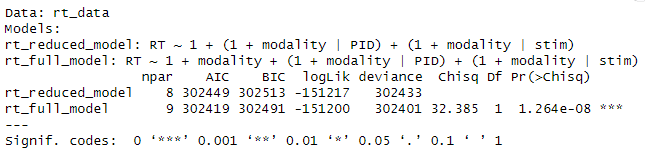

Session 8 Mixed Models
Chris Berry
2025
8.1 Overview
- Slides from the lecture part of the session: Download
- R Studio online Access here using University log-in
The use of mixed models is becoming more and more popular in the analysis of psychological experiments. This session is introductory, and for more detailed overviews, students should consult the Reference list.
Mixed effects models or mixed models are an extension of multiple regression that allow the dependencies among groups of data points to be explicitly accounted for via additional random effects parameters. Dependency can arise because responses come from the same participant, stimulus set, or cluster (e.g., classroom or hospital).
This can also be useful in experiments where researchers measure responses across a set of items. Rather than deriving a single score across all items or trials (e.g., an accuracy measure, or a mean), all the responses can be entered into the analysis and the variance associated with the responses to each item across participants explicitly modelled.
This technique can also circumvent the need to discard participants or trials with missing responses from the analysis (provided data are missing at random).
8.2 Types of mixed model
When the outcome variable is continuous (e.g., response time) the model is called a Linear Mixed Model (LMM).
If the outcome is binary (e.g., correct vs. incorrect), the model is called a Generalised Linear Mixed Model (GLMM) and a different approach must be used to the one in this worksheet. (See the References for more detail.)
8.3 lme4
Mixed models can be run using the lme4 package (Bates et al., 2015).
We will use data from Brown (2021):
- The data are from a response time (RT) experiment in which 53 participants were presented with a word on each trial.
- Each word was presented either auditorily (audio-only condition), or both auditorily and visually (they saw each word spoken in a video clip) (audiovisual condition). There were 543 words in total.
- The participant's task was to listen to and repeat back each word while simultaneously performing a response time task.
- Each participant was presented with words in both conditions.
The data is publicly avaialble via the Open Science Framework at https://osf.io/download/53wc4/.
Load the data and store it in rt_data.
Take a look at the first six rows of the data:
| PID | RT | modality | stim |
|---|---|---|---|
| 301 | 1024 | Audio-only | gown |
| 301 | 838 | Audio-only | might |
| 301 | 1060 | Audio-only | fern |
| 301 | 882 | Audio-only | vane |
| 301 | 971 | Audio-only | pup |
| 301 | 1064 | Audio-only | rise |
About the data in each column:
PIDcontains the unique identifier for each participant.RTcontains the response time for each trial.modalitycontains the label for each condition (Audio-onlyorAudiovisual)stimcontains the word that was presented on each trial
Exercise 8.1 Design Check
What is the name of the dependent variable?
Is
modalityof presentation manipulated within- or between-subjects?How many levels does
modalityhave?How many participants were there?
How many unique stimuli (words) were there?
What format is the data in
rt_datain?
8.4 Fixed and Random effects
Mixed models comprise fixed and random effects.
Fixed effect: A population-level effect, assumed to persist across experiments with different participants or items. They are used to model average trends. Typically the independent variable is the fixed effect, for example, levels of difficulty in an experiment, manipulated by an experimenter.
Random effect: Represents the extent to which the fixed effect randomly varies across a grouping variable (e.g., participants, or items). For example, the behaviour of individual participants or items may differ from the average trend (some may do better than others). The random effects are always categorical variables. They should have at least 5 or 6 levels.
Exercise 8.2 For the Brown (2021) dataset:
What would be the fixed effect?
What would be one random effect?
What would be a second random effect?
In this design, we are justified in including both participants and items as random effects because you can think of modality as having been manipulated both within-subjects and within-items:
Within-subjects: The participants provided responses in both conditions.
Within-items: Each item was also presented in both conditions. That is, for some participants a word was presented in the
Audio-onlycondition and for other participants it appeared in theAudiovisualcondition.
In other words, we have scores for each participant in each condition, and also scores for each item in each condition. If the items in each condition were different, it wouldn't make sense to include item as a random effect.
8.5 Specifying the model
A mixed model approach allows for the variability across items and participants to be modelled via random intercepts and random slopes. For each, you can have by-participant and by-item effects.
- Random intercepts:
- by-participant: accounts for individual differences in participants' RTs.
- by-item: accounts for differences in RTs to particular words.
- Random slopes:
- by-participant: accounts for individual differences in the effect of modality on RT.
- by-item: accounts for differences in the effect of modality on particular words.
Note that if random slopes and intercepts are included, correlations between them will also be estimated. A correlation could occur, for example, if slower participants show larger effects of modality.
Models with different combinations of random effects can be specified and compared to test whether there's evidence for particular components or not.
8.5.1 Fixed effect model with random intercepts
The simplest random effects model has random intercepts only.
The general formula is:
lmer(outcome ~ predictor + (1|participant) + (1|item), data = data)
Note that fixed effects are specified outside parentheses:
predictormeans include the fixed effect of predictor
Random effects are specified inside parentheses:
Things to the left of | vary according to things on the right.
(1|participant)means the intercept (represented with '1') varies according toparticipant.(1|item)means the intercept (1) varies according toitem.
So, in words, the formula means "model the outcome variable as a function of the fixed effect of the predictor, with random intercepts for participant and item."
8.5.2 Fixed effect model with random intercepts AND slopes
The effect of modality can be allowed to differ across participants and items by including random slopes.
The general formula is:
lmer(outcome ~ predictor + (1 + predictor|participant) + (1 + predictor|item), data = data)
Where:
(1 + predictor|participant)means the intercept (1) and fixed effect (predictor) varies according toparticipant.(1 + predictor|item)means the intercept (1) and fixed effect (predictor) varies according toitem.
8.5.3 Multiple fixed effects, random intercepts AND slopes
For multiple fixed effects, e.g., predictor1 and predictor2, an example of the formula used could be:
lmer(outcome ~ predictor1 + predictor2 + (1 + predictor1 + predictor2|participant) + (1 + predictor1|item), data = data)
Where:
predictor1means include the fixed effect ofpredictor1.predictor2means include the fixed effect ofpredictor2.(1 + predictor1 + predictor2|participant)means include random intercepts (1) forparticipantand also by-participant random slopes forpredictor1andpredictor2.(1 + predictor1|item)means include random intercepts foritemand by-item random slopes forpredictor1.
8.6 The analysis: Do RTs differ across modality conditions?
The researchers wanted to know whether RTs differ according to the modality condition.
As covered in the lecture, the first step is to specify the maximal (full) model permitted by the design. Here, it's one that includes random intercepts and slopes for participant and stimulus.
# Specify the full model and store in rt_full_model
rt_full_model <-
lmer(RT ~ 1 + modality + (1 + modality|PID) + (1 + modality|stim), data = rt_data)This "maximal" model for the data includes:
- The fixed effect of
modality - By-participant and by-item random intercepts
- By-participant and by-item random slopes
For comparison, we need to specify the reduced model, which is identical except it does not contain the fixed effect.
# Specify the reduced model and store in rt_reduced_model
rt_reduced_model <- lmer(RT ~ 1 + (1 + modality|PID) + (1 + modality|stim), data = rt_data)To compare the full and reduced models use anova(model_1, model_2), that is,

- This tests a null hypothesis that the full and reduced models are statistically equivalent.
- Specifically, a likelihood ratio test is performed, which involves obtaining the likelihood of each model and then comparing the likelihoods.
- The p-value is the probability of obtaining a test statistic at least as extreme as the one observed, if the null hypothesis is true.
- If the p-value for the test is less than 0.05, then, by convention, we say the test is statistically significant.
- The p-value is shown in the
Pr(>ChiSq)column and is a very small number (e.g., 1.26e-08), being clearly less than 0.05. - This means that the full model fits the data significantly better than the reduced model, and we have evidence for the fixed effect.
8.7 Inspecting the model
Now we know that we have evidence for the full model containing the fixed effect, we can look at it in detail:
## Linear mixed model fit by REML. t-tests use Satterthwaite's method [
## lmerModLmerTest]
## Formula: RT ~ 1 + modality + (1 + modality | PID) + (1 + modality | stim)
## Data: rt_data
##
## REML criterion at convergence: 302385.7
##
## Scaled residuals:
## Min 1Q Median 3Q Max
## -3.3646 -0.6964 -0.0141 0.5886 5.0003
##
## Random effects:
## Groups Name Variance Std.Dev. Corr
## stim (Intercept) 304.0 17.44
## modalityAudiovisual 216.9 14.73 0.16
## PID (Intercept) 28559.0 168.99
## modalityAudiovisual 7709.0 87.80 -0.17
## Residual 65258.8 255.46
## Number of obs: 21679, groups: stim, 543; PID, 53
##
## Fixed effects:
## Estimate Std. Error df t value Pr(>|t|)
## (Intercept) 1044.14 23.36 52.12 44.700 < 2e-16 ***
## modalityAudiovisual 83.18 12.57 52.10 6.615 2.02e-08 ***
## ---
## Signif. codes: 0 '***' 0.001 '**' 0.01 '*' 0.05 '.' 0.1 ' ' 1
##
## Correlation of Fixed Effects:
## (Intr)
## modltyAdvsl -0.178In the output:
- REML stands for Restricted Maximum Likelihood. This is the method that was used to fit the model to the data.
- The formula entered for the mixed model is given again.
- Information about the variance in the residuals is given.
Random effects:
- The values in
Std. Devare the estimates of the variance in the random intercepts and slopes in participants (PID) and items (stim). - The values in
Corrare the estimates of the correlation between the random intercept and random slopes (by-participant and by-item).- The correlation of 0.16 means that the effect was larger for items that took longer to respond to.
- The correlation of -0.17 means that the effect of modality was smaller in participants who took longer to respond.
To interpret the fixed effects, we need to consider how the levels of modality were coded.
- R uses dummy coding (0s and 1s) to code the levels of a factor (or a character variable).
- modality has levels
Audio-onlyandAudiovisual - R assigns the 0s and 1s in dummy coding alphabetically.
Audio-onlyis therefore coded with 0s.Audiovisualis therefore coded with 1s.
Fixed effects:
- The estimate of the intercept is given as 1044.14. This represents the average RT in the
Audio-onlygroup (the condition coded with zeros). - The estimate of the fixed effect of modality is given as 83.18. This represents how much greater the mean is in the
Audiovisualcondition (coded with 1s), once participant and items have been taken into account.
The researchers in this experiment thought RTs would be slower in Audio-visual condition than the audio-only condition. Seeing a word in addition to hearing it may be associated with greater cognitive effort.
Are the researchers correct or not?
Because the fixed effect of modality is 83.18, and because Audio-visual was (dummy) coded with 1s and Audio-only was coded with 0s, this means that the mean of the Audiovisual condition is 83.18 greater than that of the Audiovisual condition. The outcome variable is RT, which means that responses in the Audiovisual condition were 83 ms slower, on average, as expected by the researchers.
8.7.1 Convergence issues
It is common when running LMMs for the model to not converge successfully, meaning that R was unable to estimate all the parameters of the model.
This is especially common with more complex models, such as those with multiple fixed and random effects and their interactions.
If you receive a warning saying that the model did not converge, or that the fit is singular, you should not report the results from the model.
One solution is to explore all the fitting options in lmer() that do allow for convergence.
Handily, this can be done for you automatically using the allFit() function in the afex package:
## bobyqa : [OK]
## Nelder_Mead : [OK]
## nlminbwrap : [OK]
## optimx.L-BFGS-B : [OK]
## nloptwrap.NLOPT_LN_NELDERMEAD : [OK]
## nloptwrap.NLOPT_LN_BOBYQA : [OK]
## original model:
## RT ~ 1 + modality + (1 + modality | PID) + (1 + modality | stim)
## data: rt_data
## optimizers (6): bobyqa, Nelder_Mead, nlminbwrap, optimx.L-BFGS-B,nloptwrap.NLOPT_LN_NELDERME...
## differences in negative log-likelihoods:
## max= 0.00015 ; std dev= 6.08e-05This will provide a list of the optimisers (e.g., bobyqa, Nelder_Mead) in lmer() that produce convergence warnings or singular fits or do successfully converge [OK].
An optimiser from this list can then be manually specified using lmerControl when running the model:
rt_full_model <- lmer(RT ~ 1 + modality + (1 + modality|PID) + (1 + modality|stim),
data = rt_data,
control = lmerControl(optimizer = "bobyqa"))Other things that may improve convergence are:
- increase the number of iterations the optimisation routine performs (with
control = lmerControl(optCtr = list(maxfun = 1e9))) - remove the derivative calculations that occur after the model has reached a solution (via.
control = lmerControl(calc.derivs = FALSE))
If the model still does not converge, then the complexity of the model should be systematically reduced. For example, remove a component such as a random slope term and re-run it, repeating the process of removing more and more components until it converges.
Ideally, the random effects you include in the model should be psychologically principled and guided by theory.
8.7.2 Coefficients
For learning purposes only, let's see for ourselves that each participant in the final model has their own estimate of the intercept and slope, using coef()
| (Intercept) | modalityAudiovisual | |
|---|---|---|
| 301 | 1024.0672 | -16.936244 |
| 302 | 1044.1377 | 1.843072 |
| 303 | 882.8292 | 57.790549 |
| 304 | 1232.7548 | -27.919783 |
| 306 | 1042.3427 | 33.886178 |
| 307 | 1111.3621 | -9.938361 |
See also the random intercepts and slopes for each item:
| (Intercept) | modalityAudiovisual | |
|---|---|---|
| babe | 1038.919 | 82.11841 |
| back | 1050.914 | 86.52439 |
| bad | 1041.122 | 81.12280 |
| bag | 1042.892 | 86.41081 |
| bake | 1039.394 | 81.75528 |
| balk | 1042.558 | 84.17974 |
You wouldn't report these, but looking at them helps to make it concrete that each participant and stimulus has its own intercept and effect of modality (slope) in this model.
8.7.3 Graph
The emmeans() package can be used to obtain the means from the model for a figure.
EMM stands for Estimated Marginal Means. These are means for conditions or contrasts, estimated by the model that was fit to the data.
Obtain the estimates of mean RT in the two modality conditions:
# load emmeans package
library(emmeans)
# obtain the emms from the model, for each level of modality
emms <- emmeans(rt_full_model, ~ modality)If you get a warning that tells us that it can't calculate the degrees of freedom, then don't worry since we don't need these right now.
To see the EMMs:
## modality emmean SE df asymp.LCL asymp.UCL
## Audio-only 1044 23.4 Inf 998 1090
## Audiovisual 1127 24.5 Inf 1079 1175
##
## Degrees-of-freedom method: asymptotic
## Confidence level used: 0.95- The EMMs are in the
emmeancolumn. - Associated standard errors are in
SE. - The values in the
asymp.LCLcolumn are the lower 95% confidence interval limits of the means. - The values in the
asymp.UCLcolumn are the upper 95% confidence interval limits of the means.
- The estimated mean of the
Audio-onlycondition is - The estimated mean of the
Audiovisualcondition is
To create a figure showing these means in ggplot():
# use emms, convert to tibble for ggplot,
# plot means and errorbars
as_tibble(emms) %>%
ggplot(aes(x = modality, y = emmean)) +
geom_point(group = 1, size = 3) +
geom_errorbar(aes(ymin = asymp.LCL, ymax = asymp.UCL, width = 0.2)) +
ylab("Estimated marginal mean RT") +
xlab("Condition")Figure 5.2: Estimated marginal mean RT in each modality condition, controlling for participant and stimulus. Error bars denote the 95% confidence interval.
These means in the figure are technically based on estimates of parameters from the model. That is, they are the mean of the levels of the fixed effect after accounting for the random effects, and so won't necessarily be the same as the means you may calculate directly from the data.
For learning purposes only, let's compare what the means would have been when calculated in the traditional way (without accounting for the random effects).
# average RTs across participants in each condition
# then work out the mean across participants
rt_data %>%
group_by(PID, modality) %>%
summarise(M = mean(RT)) %>%
ungroup() %>%
group_by(modality) %>%
summarise(M_RT = mean(M))In this case, the means come out the same.
Now see if the modality effect would be significant in a traditional paired t-test. Again, this is for learning purposes only - most LMMs would be more complex than only having a fixed factor with two levels!
Ms <-
rt_data %>%
group_by(PID, modality) %>%
summarise(M = mean(RT)) %>%
pivot_wider(names_from=modality,values_from=M)
t.test(Ms$`Audio-only`, Ms$Audiovisual, paired = TRUE)The pattern of significance is the same in the t-test and LMM (there's a significant effect of condition).
8.8 Going further: Multiple factors
The analysis above was for a very simple scenario where the fixed factor had two levels. It can be extended to include an additional fixed factor and interaction between the factors.
Load the extended data from Brown (2021) at "https://osf.io/download/vkfzn/" and store in rt_data_interaction.
# load data with additional fixed factor
rt_data_interaction <- read_csv("https://osf.io/download/vkfzn/") ## Rows: 21679 Columns: 5
## ── Column specification ────────────────────────────────────────────────────────
## Delimiter: ","
## chr (3): SNR, modality, stim
## dbl (2): PID, RT
##
## ℹ Use `spec()` to retrieve the full column specification for this data.
## ℹ Specify the column types or set `show_col_types = FALSE` to quiet this message.Exercise 8.3
- The name of the column containing the new fixed factor is
- The levels of the new factor are
SNR stands for Signal to Noise Ratio. This manipulation involved changing the background noise to affect how difficult it was to hear the word on each trial.
- In the
Easycondition, it was easy to hear the word against background noise. - In the
Hardcondition, it was difficult to hear the word against the background noise.
To specify the full model with the interaction between the two fixed factors:
# Specify the LMM with an interaction term
rt_int.mod <- lmer(RT ~ 1 + modality + SNR + modality*SNR +
(1 + modality + SNR|stim) + (1 + modality + SNR|PID),
data = rt_data_interaction)## boundary (singular) fit: see help('isSingular')- Notice that the interaction was specified by adding
modality:SNR. - We could have alternatively used
modality*SNRto add the interaction. - Notice that the model includes random intercepts and slopes for each factor (by participant and by-item).
- Random effects for the interaction term have not been included. Doing so often leads to an oversaturated model and/or convergence issues. The researcher didn't include them.
The model failed to converge and is singular.
Use allFit() from the afex package to see if another optimizer will work.
# This code will take a while to run
# as allFit() tries each different optimizer!
allFit(rt_int.mod)
To help convergence, Brown (2021) removed components of the model relating to the random effects of items. Specifically:
- The by-item random slopes associated with each fixed factor were removed. The component
(1 + modality + SNR| stim)becomes(1|stim). - The correlation between the random intercept for
stimand the by-stimulus random slope formodalitywas also removed using+ (0 + modality|stim). They weren't interested in that correlation. - The
allFit()function indicated that the bobyqa optimizer led to convergence.
Thus, their final model is:
rt_int.mod <- lmer(RT ~ 1 + modality + SNR + modality:SNR +
(0 + modality|stim) + (1|stim) + (1 + modality + SNR|PID),
data = rt_data_interaction,
control = lmerControl(optimizer = 'bobyqa'))## boundary (singular) fit: see help('isSingular')This model still doesn't converge here for us though!
To help convergence, we'll try removing the + (0 + modality|stim) term:
rt_int.mod <- lmer(RT ~ 1 + modality + SNR + modality:SNR +
(1|stim) + (1 + modality + SNR|PID),
data = rt_data_interaction,
control = lmerControl(optimizer = 'bobyqa'))This model now contains random intercepts (by-item and by-participant), and also by-participant random slopes for the effects of modality and SNR.
The model converges!
Now we can look at the model results using summary():
## Linear mixed model fit by REML. t-tests use Satterthwaite's method [
## lmerModLmerTest]
## Formula: RT ~ 1 + modality + SNR + modality:SNR + (1 | stim) + (1 + modality +
## SNR | PID)
## Data: rt_data_interaction
## Control: lmerControl(optimizer = "bobyqa")
##
## REML criterion at convergence: 301138.6
##
## Scaled residuals:
## Min 1Q Median 3Q Max
## -3.5317 -0.6951 -0.0044 0.5970 4.8640
##
## Random effects:
## Groups Name Variance Std.Dev. Corr
## stim (Intercept) 395 19.88
## PID (Intercept) 25527 159.77
## modalityAudiovisual 8046 89.70 -0.03
## SNRHard 10357 101.77 0.02 -0.47
## Residual 61269 247.53
## Number of obs: 21679, groups: stim, 543; PID, 53
##
## Fixed effects:
## Estimate Std. Error df t value Pr(>|t|)
## (Intercept) 998.829 22.218 52.745 44.957 < 2e-16 ***
## modalityAudiovisual 98.510 13.190 58.894 7.469 4.39e-10 ***
## SNRHard 92.346 14.792 58.015 6.243 5.39e-08 ***
## modalityAudiovisual:SNRHard -29.556 6.756 21346.939 -4.374 1.22e-05 ***
## ---
## Signif. codes: 0 '***' 0.001 '**' 0.01 '*' 0.05 '.' 0.1 ' ' 1
##
## Correlation of Fixed Effects:
## (Intr) mdltyA SNRHrd
## modltyAdvsl -0.063
## SNRHard -0.015 -0.354
## mdltyA:SNRH 0.074 -0.247 -0.233- Significance tests on the main effects and interaction are conducted using Satterthwaite's method, which is a way of estimating degrees of freedom to enable a hypothesis test to be conducted.
- There are significant main effects of modality, t(58.89) = 44.96, p < .001, and SNR, t(58.01) = 6.24, p < .001, and there's also a significant interaction between the factors, t(21346.94) = -4.37, p < .001.
It is possible to interpret the main effects and interaction by looking at the values of the coefficients (see Brown, 2021, p.14). An alternative way, however, is to obtain and then plot the EMMs of each condition:
# obtain the EMMs for each condition
emms_interaction <- emmeans(rt_int.mod, ~modality*SNR)
# look at the emms
emms_interaction## modality SNR emmean SE df asymp.LCL asymp.UCL
## Audio-only Easy 999 22.2 Inf 955 1042
## Audiovisual Easy 1097 25.1 Inf 1048 1147
## Audio-only Hard 1091 26.5 Inf 1039 1143
## Audiovisual Hard 1160 26.1 Inf 1109 1211
##
## Degrees-of-freedom method: asymptotic
## Confidence level used: 0.95
Now plot the means using ggplot():
# use ggplot to plot the emms as points, with line connectors, and errorbars
as_tibble(emms_interaction) %>%
ggplot(aes(x = modality, y = emmean, color = SNR)) +
geom_point(size = 2) +
geom_line(aes(group = SNR)) +
geom_errorbar(aes(ymin = asymp.LCL, ymax = asymp.UCL, width = 0.1)) +
ylab("Estimated marginal mean RT") +
xlab("SNR condition") +
ylim(0,1300)Figure 8.1: Estimated marginal mean RT in each condition, controlling for participant and stimulus. Error bars denote the 95% confidence interval.
- This figure reveals the nature of the significant interaction. The effect of modality is greater in the
Easyvs.HardSNR condition (98 ms vs. 69 ms, calculated from the EMMs inemms_interaction).
8.9 Summary
Mixed models provide a way of estimating fixed effects, while accounting for random effects of participants and items.
They are becoming increasingly common in the psychological literature.
Models can be more complex by having fixed effects with more than two levels, multiple fixed effects, and additional random effects.
Random effects structures often need to be simplified to allow the model to be fit successfully.
See Brown (2021) for an example with a binary response variable (e.g., accuracy = correct vs. incorrect); this analysis is called a generalised linear mixed model (GLMM). Jaeger (2008) also provides a tutorial.
For more guidance on reporting mixed models, see Meteyard and Davies (2020).
Interested students should consult the articles below.
8.10 References
Recommended introductory texts:
Brown, V. A. (2021). An introduction to linear mixed-effects modeling in R. Advances in Methods and Practices in Psychological Science, 4(1), Article 2515245920960351. https://doi.org/10.1177/2515245920960351
Singmann, H., & Kellen, D.(2019). An Introduction to Mixed Models for Experimental Psychology. In D.H. Spieler & E. Schumacher(Eds.), New Methods in Cognitive Psychology (pp.4–31).Psychology Press. [PDF link]
Going further:
Bates, D., Mächler, M., Bolker, B., & Walker, S. (2015). Fitting Linear Mixed-Effects Models Using lme4. Journal of Statistical Software, 67, 1-48. [PDF link]
Bolker, B. M. (2015). Linear and generalized linear mixed models. Ecological statistics: contemporary theory and application, 309-333. [PDF link]
Bono, R., Alarcón R., & Blanca M.J. (2021). Report quality of generalized linear mixed models in psychology: a systematic review. Frontiers in Psychology. 12:666182 [Article]
Meteyard, L., & Davies, R. A. (2020). Best practice guidance for linear mixed-effects models in psychological science. Journal of Memory and Language, 112, 104092. [Article]
Jaeger, T. F. (2008). Categorical data analysis: Away from ANOVAs (transformation or not) and towards logit mixed models. Journal of Memory and Language, 59(4), 434–446. [Article]